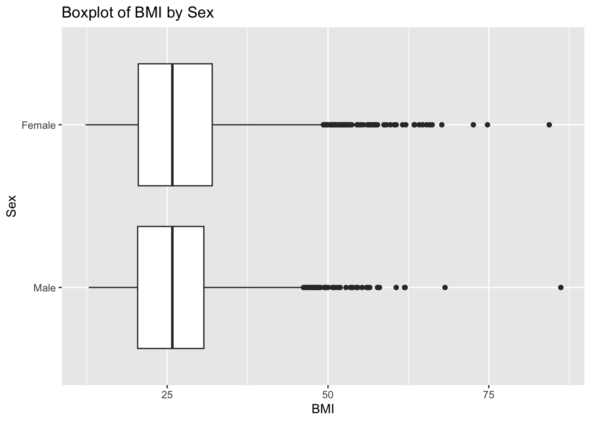
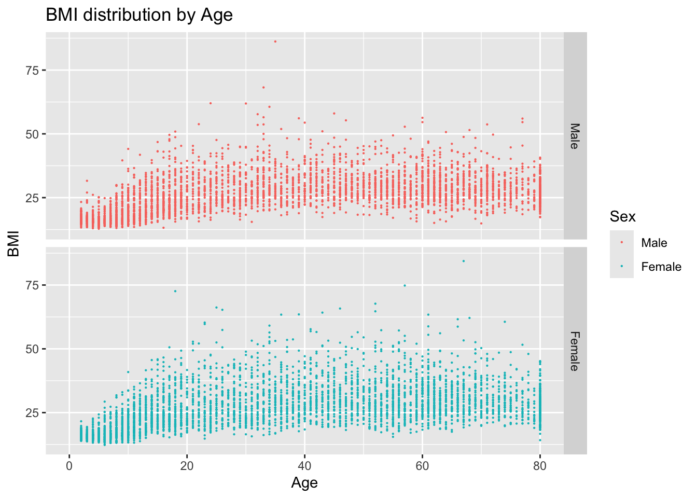
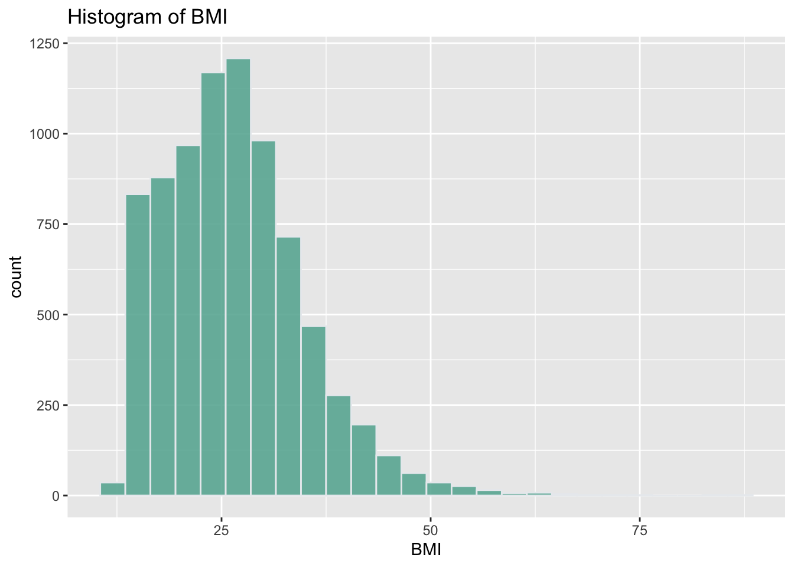

Research question: Whether drinking certain types of milk with certain fat content for regular consumption is associated with obesity or overweight in adults in US.
Intended audience: US adults aged 18-80.
Data source: This study is a cross-sectional study using data from the National Health and Nutrition Examination Survey (NHANES), 2017-March 2020 Pre-Pandemic cycle(Health Statistics 2018). NHANES is a program of studies designed to assess the health and nutritional status of adults and children in the United States. Due to the coronavirus disease 2019 (COVID-19) pandemic, data collected from 2019 to March 2020 were combined with data from the NHANES 2017-2018 cycle to form a nationally representative sample of NHANES 2017-March 2020 pre-pandemic data.
Defined based on BMI. Obesity/overweight is defined as BMI ≥ 25 kg/m2, and normal/underweight is defined as BMI < 25 kg/m2(Piché, Tchernof, and Després 2020).
Type of milk
The type of milk usually consumed in the past 30 days
Age
Age at baseline
Sex
Sex at birth
Race/ethnicity
Race/ethnicity at birth
Education level
Education level at baseline
Family poverty income ratio
Family poverty income ratio at baseline
Physical activity level
Active PA is defined as meeting or exceeding 600 MET-min/week, as per the physical activity guidelines established in the USA. Conversely, inactive PA is defined as falling below 600 MET-min/week(Chudasama et al. 2019).
Energy intake
Energy intake on Day 1
Statistical Analysis:
Since NHANES provided survey data, certain weights were applied to adjust for the distribution of the population. Missing data was handled using complete case analysis because the dataset was large enough that bias were minimized.
Multivariable logistic regression models will be used to estimate the association between whole milk consumption and the odds of obesity/overweight compared to normal/underweight, respectively. The results will be shown using odds ratios (ORs) and confidence intervals (95%CIs). The first model will only includes exposure variable, and the second model will be adjusted for potential confounding covariables. All statistical analysis was conducted with R 4.2.2.
Result:
Data description:
The study included 7555 participants without missing exposure status before weighting and 190,923,999 after weighting. The median age (IQR) was 57 (43, 70), 47 (33, 63), 47 (32, 62), 44 (30, 59) and 44 (30, 61) in fat-free, 1%, 2%, whole fat and other milk group. Those who drinks fat-free milk tended to be older, female and non-Hispanic White, with higher education level and income, while those who drinks whole fat milk tended to be younger, male and non-White (mainly non-Hispanic Black), with lower education level and income (Table 1).
Table 1. Characteristics of participants by types of milk consumption
library(dplyr)
Attaching package: 'dplyr'
The following objects are masked from 'package:stats':
filter, lag
The following objects are masked from 'package:base':
intersect, setdiff, setequal, union
To simplify the category of BMI, normal weight and underweight were grouped together, and obesity and overweight were group together.
ggplot(nhanes_2017_20, aes(BMXBMI, Sex)) +geom_boxplot() +labs(x ="BMI", y ="Sex", title ="Boxplot of BMI by Sex")
Warning: Removed 1249 rows containing non-finite outside the scale range
(`stat_boxplot()`).

ggplot(nhanes_2017_20, aes(x = RIDAGEYR, y = BMXBMI,color = Sex)) +geom_point(size =0.1) +facet_grid(vars(Sex)) +labs(x ="Age", y ="BMI", title ="BMI distribution by Age")
Warning: Removed 1249 rows containing missing values or values outside the scale range
(`geom_point()`).

ggplot(nhanes_2017_20, aes(x=BMXBMI)) +geom_histogram( binwidth=3, fill="#69b3a2", color="#e9ecef", alpha=0.9) +labs(x ="BMI", title ="Histogram of BMI")
Warning: Removed 1249 rows containing non-finite outside the scale range
(`stat_bin()`).

Note
BMI is the short form of Body Mass Index, which is calculated by weight over the square of height.
knitr::kable( nhanes_2017_20[1:6, 1:6])
SEQN
SDDSRVYR
RIDSTATR
RIAGENDR
RIDAGEYR
RIDAGEMN
93703
10
2
2
2
NA
93704
10
2
1
2
NA
93705
10
2
2
66
NA
93706
10
2
1
18
NA
93707
10
2
1
13
NA
93708
10
2
2
66
NA
Summary
The results of regression analysis showed that before adjusting for other factors, only drinking whole fat milk was statistically significantly associated with lower risk of obesity or overweight (OR: 0.55, p = 0.007). However, after adjusting for race/ethnicity, sex, age, education level, family poverty income ratio, physical activity and energy intake, the association was eliminated (OR: 0.64, p = 0.077). None of the types of milk appeared to have an association with obesity or overweight (Table 2).
Chudasama, YV, KK Khunti, F Zaccardi, et al. 2019. “Physical Activity, Multimorbidity, and Life Expectancy: A UK Biobank Longitudinal Study.”BMC Medicine 17 (1): 108. https://doi.org/10.1186/s12916-019-1339-0.
Piché, M. E., A. Tchernof, and J. P. Després. 2020. “Obesity Phenotypes, Diabetes, and Cardiovascular Diseases.”Circulation Research 126 (11): 1477–1500. https://doi.org/10.1161/CIRCRESAHA.120.316101.